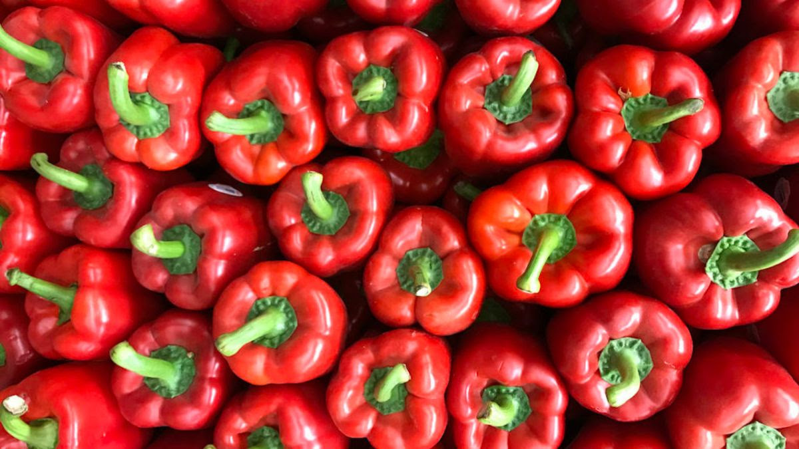
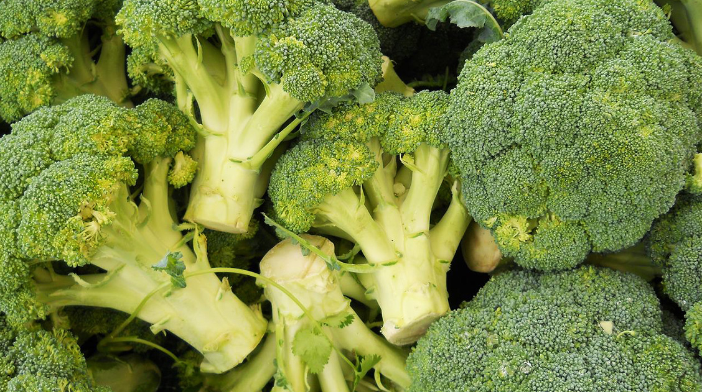
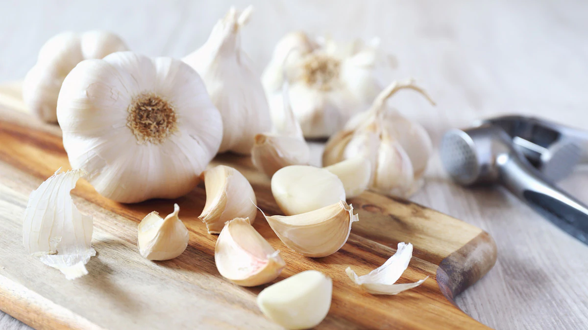
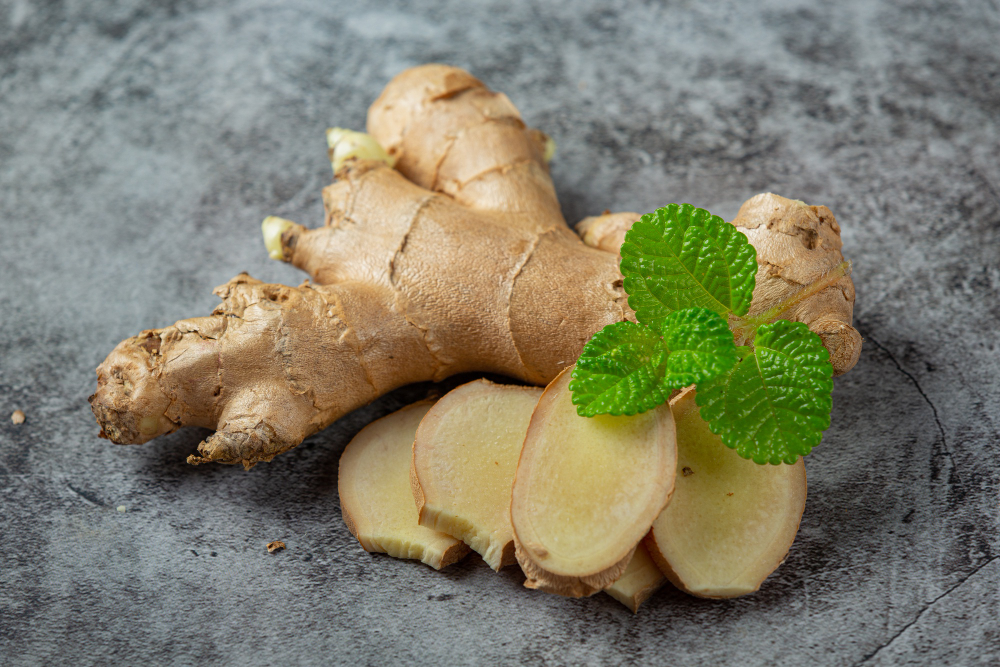
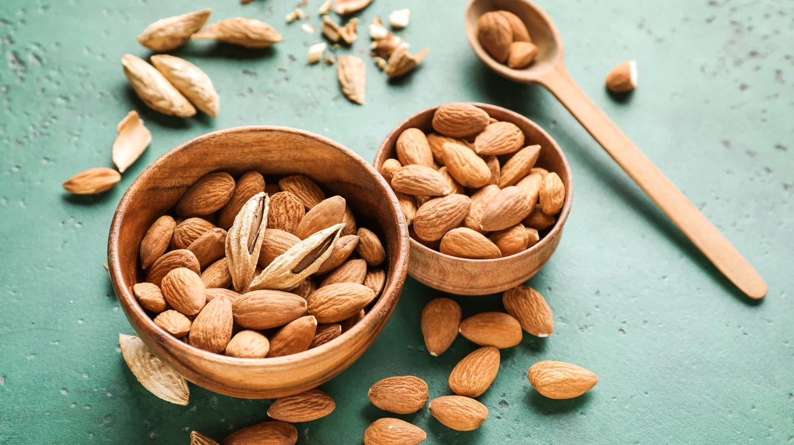
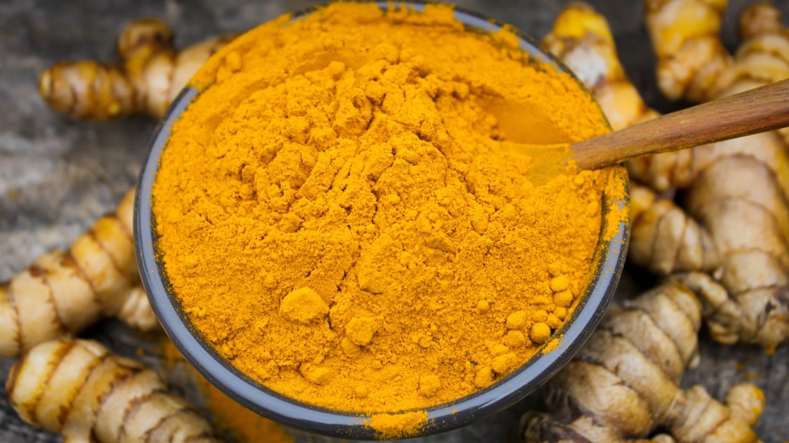

Your immune system is your body's defense against illnesses. While no single food is a magic bullet, these 10 superfoods provide vitamins, minerals, and antioxidants that support immune function and overall health.
1. Citrus Fruits

Oranges, lemons, and grapefruits are high in vitamin C, which increases the production of white blood cells — key to fighting infections.
2. Red Bell Peppers
Surprisingly, red bell peppers contain twice as much vitamin C as citrus and are also rich in beta carotene.
3. Broccoli
Broccoli is packed with vitamins A, C, and E, as well as fiber and antioxidants, making it one of the healthiest vegetables you can eat.
4. Garlic
Garlic’s immune-boosting properties come from a heavy concentration of sulfur-containing compounds, such as allicin.
5. Ginger
Ginger may help decrease inflammation, which can help reduce a sore throat and inflammatory illnesses.
6. Spinach

Rich in vitamin C and packed with numerous antioxidants and beta carotene, spinach may increase the infection-fighting ability of our immune systems.
7. Yogurt

Look for yogurts that have "live and active cultures" printed on the label, like Greek yogurt. These cultures may stimulate your immune system to help fight diseases.
8. Almonds
Almonds are rich in vitamin E, a powerful antioxidant that is key to a healthy immune system.
9. Turmeric
Turmeric contains curcumin, which has anti-inflammatory and antioxidant properties that can help boost immune function.
10. Green Tea

Green tea is packed with flavonoids, a type of antioxidant. Unlike black tea, green tea is less processed and contains more beneficial compounds.
✨ Final Tips

Incorporate these superfoods into a balanced diet, stay hydrated, get enough sleep, and manage stress for a robust immune system.
Eat well, stay well! 🌿